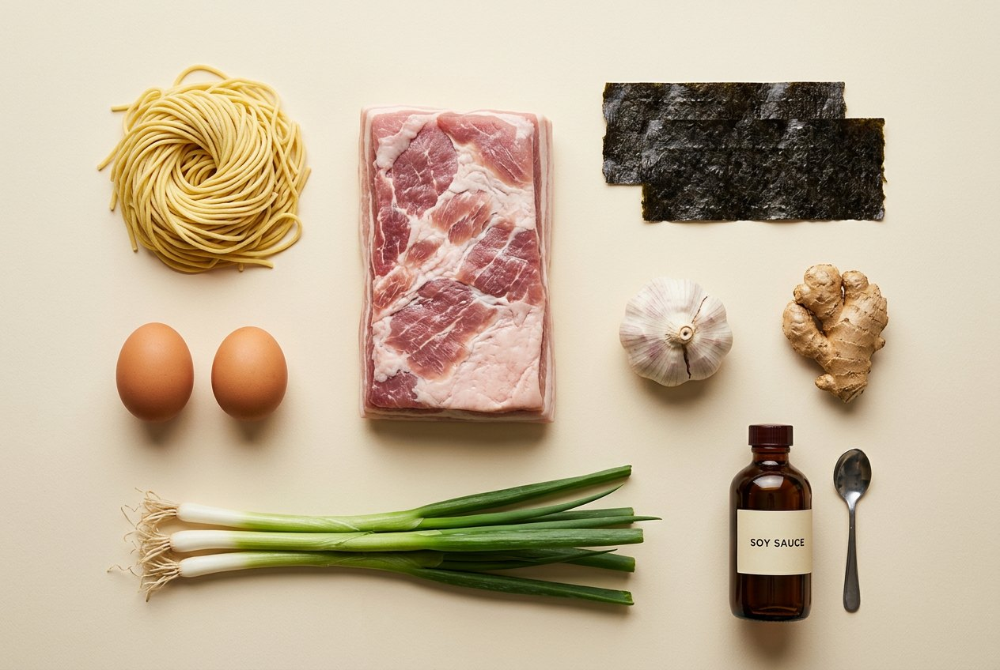
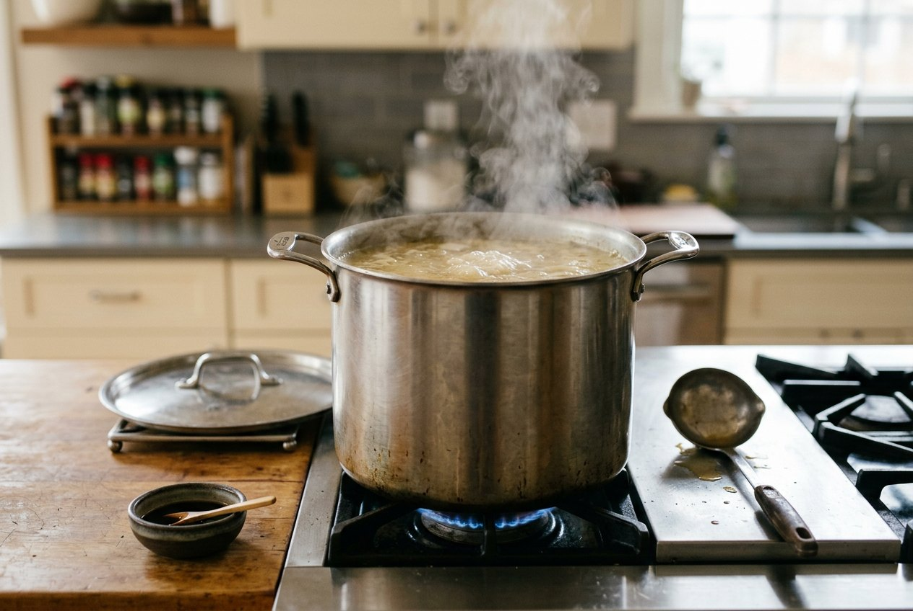

Recipe · serves 2
Shoyu ramen, the honest home version.
Tokyo-style: a clear chicken broth, a soy tare that does the seasoning, springy noodles and four toppings. No twelve-hour tonkotsu, no special equipment — one pot, one afternoon.

Ingredients
Broth
- Chicken wings or backs600 g
- Cold water1.5 l
- Onion, halved1
- Garlic cloves, crushed4
- Ginger, sliced20 g
- Leek or scallion tops1 handful
- Dried shiitake2
- Kombu8 g
Tare (the seasoning)
- Japanese soy sauce100 ml
- Mirin30 ml
- Sake30 ml
- Sugar1 tsp
- Katsuobushi optional5 g
Toppings
- Pork belly, in one piece300 g
- Eggs, fridge-cold2
- Scallions, thinly sliced2
- Nori sheets2
- Menma bamboo shoots50 g
- White pepper, chilli oilto taste
Noodles
- Fresh ramen noodles2 × 120 g
Fresh alkaline noodles are worth hunting down — they are what makes the bowl taste like ramen rather than like soup with pasta in it. Dried ramen from an Asian grocer is the next best thing; the seasoning packet from an instant pack is not needed here.
Method
The four components are made separately and meet in the bowl in the last ninety seconds. That order is the whole technique: broth stays clean, noodles stay springy, seasoning stays under your control.

-
Blanch the bones
Cover the chicken with cold water, bring to the boil and hold for 5 minutes. Drain, rinse each piece under the tap and scrub the pot. This throws away the scum that would otherwise turn your broth grey.
-
Simmer the broth
Return the bones to the clean pot with 1.5 l cold water, the onion, garlic, ginger and leek. Bring barely to a simmer — a lazy bubble every second or two — and hold there for 2 hours, skimming once or twice. Add the shiitake and kombu for the last 20 minutes only; boiled kombu turns bitter. Strain, and don't press the solids. You want about 700 ml.
-
Make the tare
Warm the soy, mirin, sake and sugar in a small pan until the sugar dissolves and the alcohol smell burns off, about 3 minutes. Off the heat, drop in the katsuobushi, steep 10 minutes, strain. This is a salty concentrate, not a soup — taste it and trust that.
-
Braise the chashu
Roll the pork belly into a log and tie it with kitchen string. Sear it on all sides, then braise in 300 ml of the broth plus 60 ml of the tare, lid on, at a bare simmer for 90 minutes, turning twice. Cool in the liquid — ideally overnight — then slice cold, 5 mm thick, and sear the slices just before serving.
-
Marinate the eggs (ajitama)
Lower cold eggs into boiling water and cook exactly 6 minutes 30 seconds, then straight into ice water for 5 minutes. Peel carefully and sit them in 3 parts water to 1 part tare for at least 4 hours, or overnight. Halve just before serving.
-
Set up
Fill the serving bowls with boiling water to warm them. Bring a large pot of unsalted water to a hard boil for the noodles, and bring the broth back to a near-boil in a separate pan. Line up the toppings. From here it takes two minutes and you cannot pause.
-
Build the bowl
Empty the hot bowls. Into each: 2–3 tbsp tare, then 300 ml hot broth, and taste — adjust with tare, never with salt. Cook the noodles to the packet time, usually 60–120 seconds, and shake them dry hard in a sieve; wet noodles water down the soup.
-
Finish and go
Fold the noodles into the bowl and lift them into an even surface with chopsticks, so the toppings sit on top instead of sinking. Lay on the chashu, half an egg, menma and scallions, and tuck the nori against the rim. Carry it to the table now — ramen waits for nobody.
Notes from the counter
Season the bowl, not the pot. Broth is kept unsalted so one batch can become shoyu, shio or miso, and so every bowl can be adjusted separately.
Never cook noodles in the broth. Released starch clouds it and turns the soup gluey.
Hot bowls matter. A cold ceramic bowl drops the broth by several degrees before the first mouthful.
Cook the noodles a touch firm. They keep cooking in the broth on the way to the table.
Shortcuts that hold up: a good shop-bought chicken stock reduced with ginger, garlic and kombu; chicken thigh seared and sliced in place of the braised belly; a soft-boiled egg without the marinade.